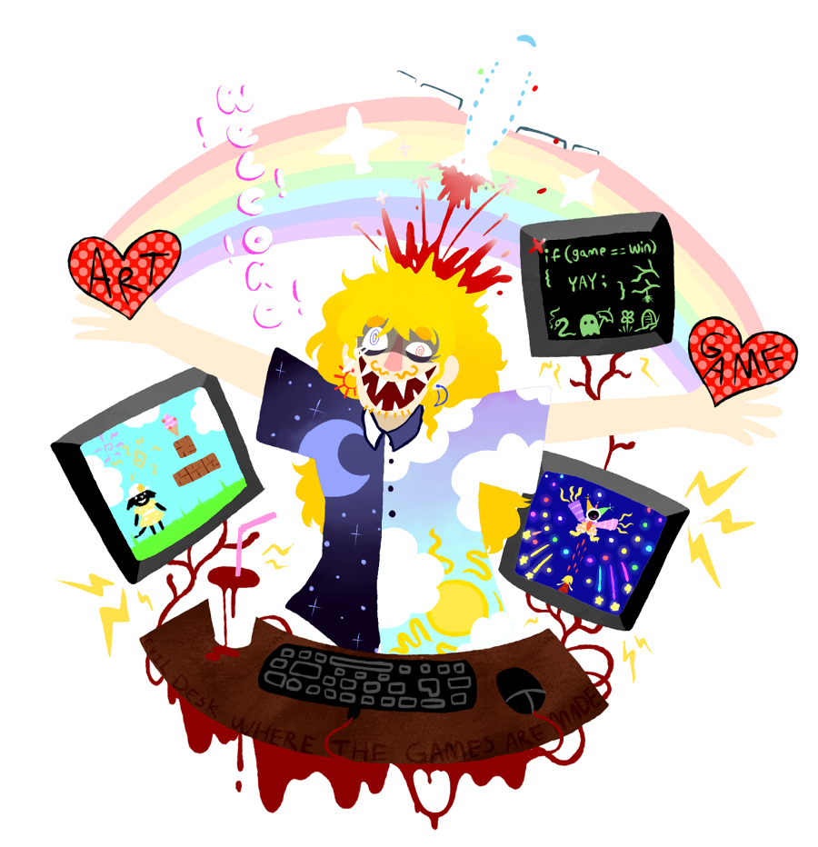

Who is Ethereal Airport?

Just a guy named Sawney, actually!! I fancy myself a character designer above all else, but I like trying lots of different things and seeing what I can make. I take an interest in lesser known game engines. And ghosts. I don't think I've ever made a story that didn't have a ghost in it.
When I'm not making video games, I'm either making some weird 3D animation or hanging at the arcade playing bullet hell games till my hearts content.
Contact: nociceptiongameSA@gmail.com
About Nociception
Nociception is a bullet hell series for windows systems, a collection of stories that take place on a different planet called Commotion, where the dead and the living exist together in daily life. It's a series of stories that I have been making in my head since I was very little, so the series will probably go on forever. I hope you look forward to learning more about my little world.